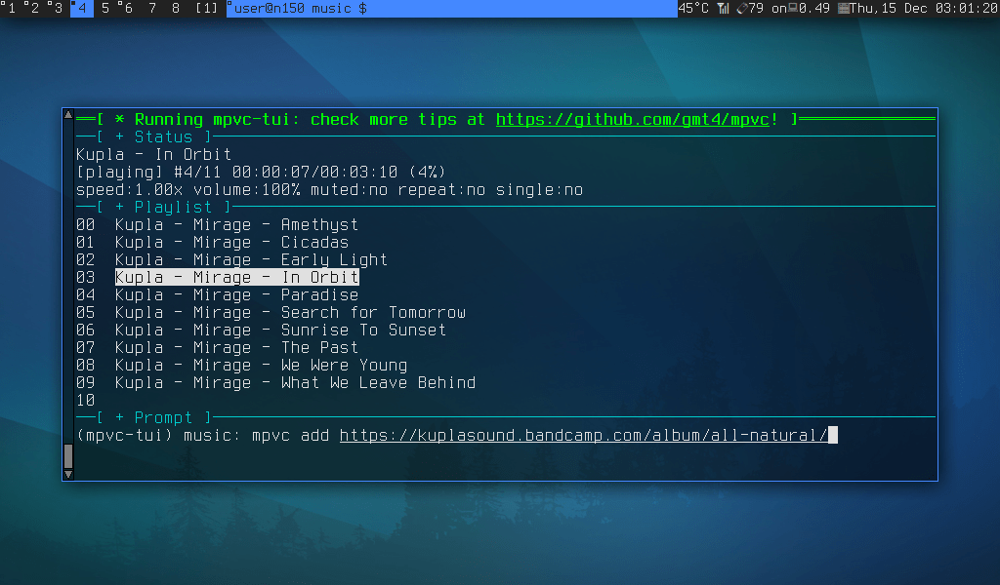
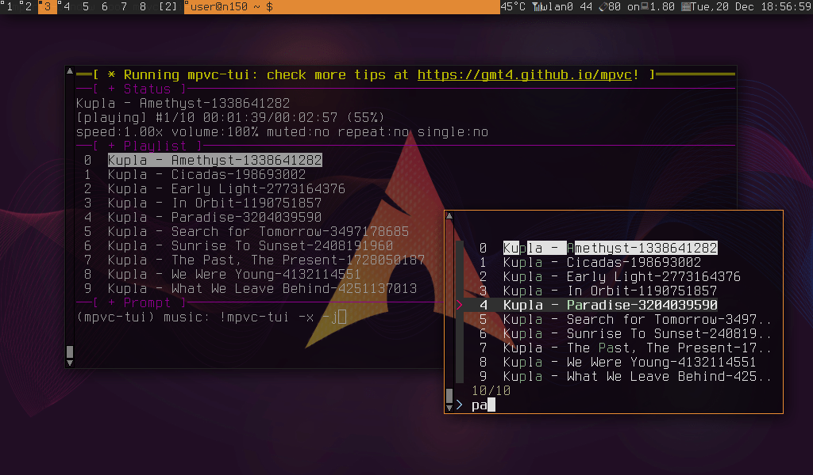

mpvc-installer fetch-user: installs mpvc under BINDIR=~/bin/
curl -fsSL -o mpvc-installer https://github.com/gmt4/mpvc/raw/master/extras/mpvc-installer && sh ./mpvc-installer fetch-user
# fetch a local copy of the github repo git clone https://github.com/gmt4/mpvc/ # use extras/mpvc-installer: just copy/link to your $HOME/bin (cd mpvc; extras/mpvc-installer link-user) # use mpvc-fzf to search and play youtube media mpvc-fzf -p 'kupla mirage' # use mpvc-fzf to manage the playlist mpvc-fzf -f # use mpvc to enqueue local media / online YT media mpvc add /path/to/your/*.mp3 # or your URLs # use mpvc-tui to start the tui + desktop notifications mpvc-tui -T
mpvc-tui -T: running the mpvc TUI

mpvc-tui -f: running with fzf (screenshot click to view)

mpvc-tui: running with fzf and desktop notifications on the upper-right corner (screenshot click to view)
The logbook got big enought to deserve a page on its own, see here: logbook.html
Last-Modified: Friday, 21 July 2023 by gmt4 Powered by #HTML 🧡 💚 💙